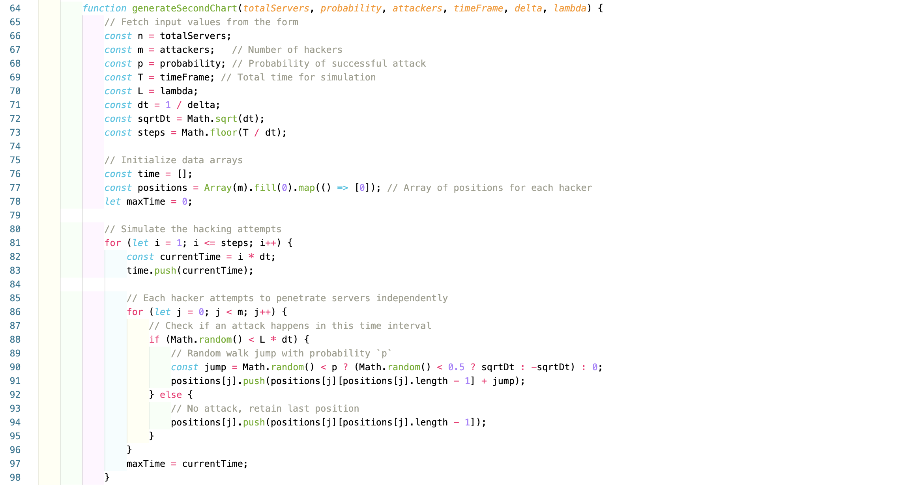

Statistical independence is a foundational concept in probability and statistics, describing scenarios in which the occurrence of one event has no influence on the occurrence of another. Formally, two events A and B are considered independent if and only if the probability of their intersection is equal to the product of their individual probabilities: \[ P(A \cap B) = P(A) \cdot P(B) \] This condition indicates that knowing the outcome of one event does not provide any information about the outcome of the other. Independence is a powerful concept because it allows for simplifications in the analysis of complex systems by decomposing them into simpler, unrelated parts.
An intuitive analogy can help illustrate this concept. Imagine flipping two fair coins. The outcome of one flip does not affect the outcome of the other, as each coin flip is an independent event with a probability of heads or tails equal to \(0.5\). Therefore, the probability of both coins landing on heads is the product of the individual probabilities: \[P(\text{Heads on coin 1 and coin 2}) = 0.5 \times 0.5 = 0.25 \] This calculation would be impossible if the events were dependent, as the outcome of one flip would change the likelihood of the other. In more complex cases, such as the independence of certain random variables in a probabilistic model, the same principle applies but requires careful verification of the formal product rule.
The formal definitions in probability theory generalize this idea to accommodate multiple events and variables. For instance, in the context of random variables \(X\) and \(Y\), they are independent if the joint probability distribution can be decomposed into the product of their marginal distributions: \[ P(X = x, Y = y) = P(X = x) \cdot P(Y = y) \] This can also extend to conditional probabilities; two events \(A\) and \(B\) are conditionally independent given a third event \(C\) if \[P(A \cap B | C) = P(A | C) \cdot P(B | C) \] This conditional independence is especially important in fields such as machine learning and Bayesian networks, where variables are often dependent on a common factor, and understanding the independent relationships simplifies modeling and analysis.
In practical applications, the assumption of independence allows statisticians to break down complex probability calculations into simpler, more manageable components. For example, in sampling, assuming that each sample is independent of others makes calculating the overall probability distribution much easier and more efficient. However, in real-world scenarios, verifying true independence can be challenging, as hidden dependencies might exist. Thus, while independence is a valuable theoretical tool, careful validation in practice is essential to ensure accurate results.

The function generateSecondChart is designed to simulate a series of independent hacking attempts over a defined time period. The input parameters include the total number of servers (totalServers), the probability of a successful hack (probability), the number of hackers (attackers), the total time frame for the simulation (timeFrame), the granularity of time intervals (delta), and a parameter representing the frequency of hacking attempts (lambda). These inputs help define the structure and behavior of the simulation, where each hacker can attempt to breach a server over time.
Within the function, several key values are calculated based on these parameters. For instance, dt represents the size of each time step, computed as the inverse of delta. sqrtDt is then calculated as the square root of dt, used later to determine jump sizes in a random walk pattern. The steps variable defines the total number of time intervals, calculated by dividing the time frame (T) by dt. The arrays time and positions are initialized, where time will store time values, and positions is a multi-dimensional array to track each hacker's position (i.e., the number of servers penetrated) over time.
The core of the simulation is a loop iterating over each time step. For each step, currentTime is calculated and added to the time array. Each hacker then attempts a breach based on a random condition governed by lambda. If a breach occurs, the hacker's position is updated in a random walk pattern using the probability p to determine the direction and size of the “jump.” If no breach occurs, the hacker's position remains the same. After all time steps, maxTime reflects the final time value in the simulation.